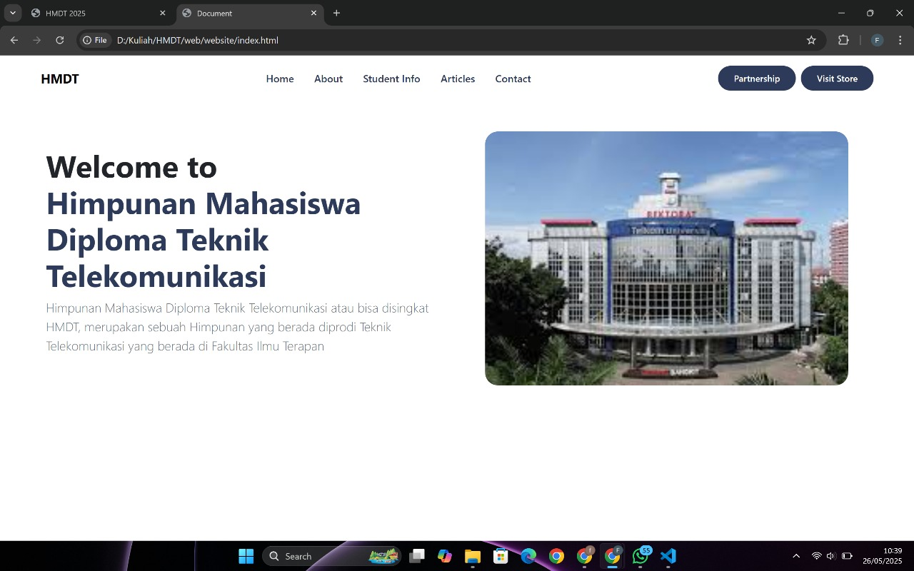

Tentang saya
Saya seorang mahasiswa yang sekarang sedang menempuh kuliah di Universitas Telkom atau biasa disebut dengan Tel-U. Saya Lahir di kota kecil yang ada di daerah Jawa Timur yang dikenal oleh banyak orang sebagai kota pendekar yaitu kota Madiun. Saya orangnya suka Touring dan Traveling.
Skill yang saya punya
Olahraga
Voli, Sepak bola, Futsal
Game
Free Fire, Mobile Legends, E-Football, Fifa
Proyek yang sedang dikerjakan

Tugas Besar Studio Desain Website
Membuat sebuah web himpunan dari prodi D3 Teknologi Telekomunikasi. Tujuan membuat web ini untuk memudahkan mahasiswa mencari informasi tentang prodi D3 Teknologi Telekomunikasi.